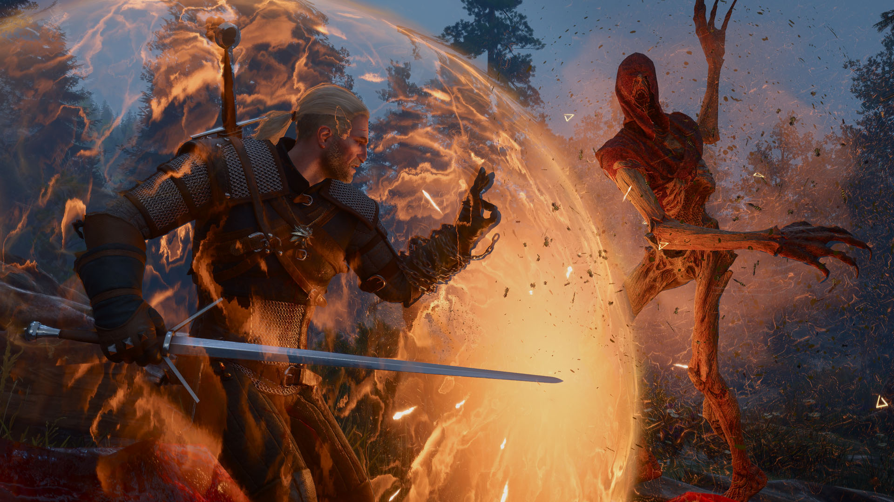

🔥🔥🔥
OpenAI 拟终止向 Cursor 供应模型
SpaceX 收购后官方决定：拟 11/12 切断，且不提供未来模型；Cursor 称 OpenAI 模型约占用户流量 5%，仍在协商。
- 日期
- 2026-08-28 官宣 · 8/29 CNBC 交叉 · 补入核
- 库
- AI 观察
- 状态
- OpenAI 官方 + CNBC
今日无新旗舰。今日无新 MCP/Skill 推荐。主线：OpenAI 拟终止向 Cursor 供应模型（SpaceX 收购后补入核）；美欧零售观察 PS5 Pro 紧缺/加价；《巫师3：狂猎》Songs of the Past 预览深潜。二次元为运营向近闻与日区联动。
不复述已报：SME×GungHo、ZZZ 3.2 前瞻、gamescom 颁奖、金刚狼、Claude Code 2.1.251、原神限时活动、魔女庭院 1.0、Usual June、征服纪、永泉传说、神鬼寓言、MW4、GTA6 Extended Look、Tarnished、Xbox Day1/2。
跨库最高 Attention 落在 OpenAI×Cursor 供应切断、PS5 Pro 零售紧缺，以及《巫师3：狂猎》Songs of the Past 预览。
观察清单：Grok 4.7 未锁；Astra 仅作「不提供给 Cursor 的未发布下一代」出现；终末地 9/2；TGS 9/16。
SpaceX 收购后官方决定：拟 11/12 切断，且不提供未来模型；Cursor 称 OpenAI 模型约占用户流量 5%，仍在协商。
Best Buy / Target / Amazon 缺货或三方约 $1,300（MSRP ~$900）；PS Direct 常见仍 MSRP。二线零售观察，非索尼官方全球断货。
Fool's Theory + CDPR；新区域 Letten；链武器与 Thornblooms / Swarmions。重制 9/29 免费、扩展 2027 已锁——本条仅预览增量。
| 观察库 | 独立 Signal | 密度 | 备注 |
|---|---|---|---|
| AI 观察 | 3 | 高 | 无新旗舰；无新 MCP/Skill 推荐；Cursor 切断 + Grok Bot×X + Codex 0.151.0 |
| 二次元游戏观察 | 4 | 中 | 无新版本/新池开门；下半近闻 + 日区联动 + 养成/周边 |
| 游戏开发观察 | 0 | 空 | 空库未出 Tab |
| 游戏行业观察 | 6 | 高 | 硬件零售 + 深潜 + 规模；无独立新增；片单空增量 |
今日无新旗舰。今日无新 MCP/Skill 推荐。主线为 OpenAI 对 Cursor 的供应切断（补入核）；另有 Grok Bot 接通 X、Codex 0.151.0 编程列车。
不复述 Claude Code 2.1.251 / MHS / Cursor Origin。观察：Grok 4.7 未锁；Astra 仅出现在切断声明语境。
OpenAI 于 2026-08-28 官方发文：在 SpaceX 收购 Cursor 后，拟于 2026-11-12 终止向 Cursor 供应模型，并明确不提供未来模型（文中点名即将到来的 Astra——非今日旗舰发布）。理由是无法确信 SpaceX 会持续遵守服务条款，并提及马斯克系公司过往合同履约记录。
一线：OpenAI 官方帖 + CNBC。关注度 · 🔥🔥🔥。非产品 KV，不配图。
xAI 宣布 Grok Bot 可连接 X：必要时自动创建开发者账号；付费用户获免费 X API 额度，可搜帖、时间线与提及。属第一方 connector，不是 MCP/Skill 推荐。
第一方 connector，明确不当 🔧 MCP/Skill 推荐。关注度 · 🔥。
OpenAI Codex CLI/客户端 rust-v0.151.0 于 2026-08-29T09:55:39Z 发布：MCP 启动宽限可配、扩展可检查/替换 MCP 工具结果、每仓插件目录——changelog 含 MCP 字样，记编程列车，不当推荐。
明确不是 MCP/Skill 推荐。关注度 · 🔥。
今日无新版本/新池开门；3.2 次日运营向。下半近闻预热 9/1；另有日区 31 冰淇淋首次联动与绝区零养成/周边。
不复述 3.2 版本锁与锋御/克拉蕾/洛克茜角色档。高雄相伴已过窗，不复述。
米游社 2026-08-29 12:00 发近闻：确认「聚星源动」于 9/1 开启，限定五星「轰隆雷鸣波·伊涅芙（雷）」UP。角色已出，非新角色、非今日开池——仅为下半预热。
官方立绘本窗未稳定取到，按 5.10 不配图。关注度 · 🔥。
日区首次与 サーティワン アイスクリーム（31 冰淇淋）联动：预约自 8/28 11:00 JST 起；售卖 9/8–10/6，移动点单限定。补入核（昨 09:30 未收）。
补入核。关注度 · 🔥。
米游社 2026-08-29 13:00：养成指南已加入克拉蕾（智能/自定义计算）；尚未公布具体材料名与数量。不复述 3.2 版本锁。
关注度 · 🔥。不展开 3.2 角色档。
GSC 粘土人「爱芮」369 元；LIMEPIE 星见雅 1/8「晓 Ver.」269 元。预售锁 9/3 20:00。
SKU 向，关注度较低。
硬件零售与展会深潜并行。今日无独立游戏观察新增；🎬 展会片单：无新世界首发 / 无新锁（gamescom 收尾）。
不复述 GTA6 Extended Look 内容、Xbox Day1/2 长名单、Tarnished 发售、颁奖与金刚狼。片单仅空增量卡。
Push Square 等二线零售观察：美国 Best Buy / Target / Amazon 等渠道售罄或三方标价约 $1,300（相对 MSRP ~$900）；PlayStation Direct 常见仍可按 MSRP 购得。本条不复述 Extended Look 内容，也不宣称索尼官方全球断货。
关注度 · 🔥🔥。不复述 Extended Look 片内容。

Fool's Theory 与 CDPR 合作扩展预览：新区域 Letten（Dandelion 故乡）、链武器，以及 Thornblooms / Swarmions 等新敌。重制版 2026-09-29 对本体持有者免费、扩展 2027——档期早已锁定，本条只记预览增量。英文副标题暂无已核官方简中，保留 Songs of the Past。
关注度 · 🔥🔥。预览增量 only。
Gematsu 2026-08-29：KRAFTON / Boundary；PS5 / Xbox / PC；约 5 分钟 gameplay。档期仍未锁——非新世界首发、非新锁。无官方简中店名，留英文。
关注度 · 🔥。
Capcom Asia 简中名《龙之信条2：黑暗觉者》。IGN / 4Gamer 展会访谈：遗战品、追加地下城、硬模式等同日深潜。发售仍 2026-10-09——已锁档，本条仅预览/访谈增量。
关注度 · 🔥。非新锁。
4Gamer 主办访谈：日本出展社同比约 +25%；出展面积/展区今年首次订满。规模向收尾观察，非片单条目。
关注度 · 🔥。
ARC SYSTEM WORKS ASIA 2026-08-29：Nintendo Switch 2 中文实体盒装版 9/17 上市。数字版已发——本条仅为实体 SKU。
SKU only。
本窗无新世界首发、无新锁。gamescom 收尾；已定档作品仅深潜（巫师3 SoP / 龙之信条2：黑暗觉者 / TARAE 预览），不单开世界首发行。
| 类型 | 作品 | 说明 |
|---|---|---|
| 深潜 | 《巫师3：狂猎》Songs of the Past | Xbox Wire 预览；重制 9/29 / 扩展 2027 已锁 |
| 深潜 | 《龙之信条2：黑暗觉者》 | IGN/4Gamer 访谈；档期仍 10/09 |
| 预览 | TARAE: The Unbound | 5 分钟实机；档期未锁 · 非新世界首发 |
规范 5.17。空增量卡。
窗口（2026-08-29，2026-08-30] Asia/Shanghai，含昨 9:30 后补入核。空库：游戏开发观察未出 Tab。今日无新旗舰；今日无新 MCP/Skill 推荐；今日无独立游戏观察新增；展会片单无新世界首发 / 无新锁。生成于 2026-08-30 09:30 档日常规整理。